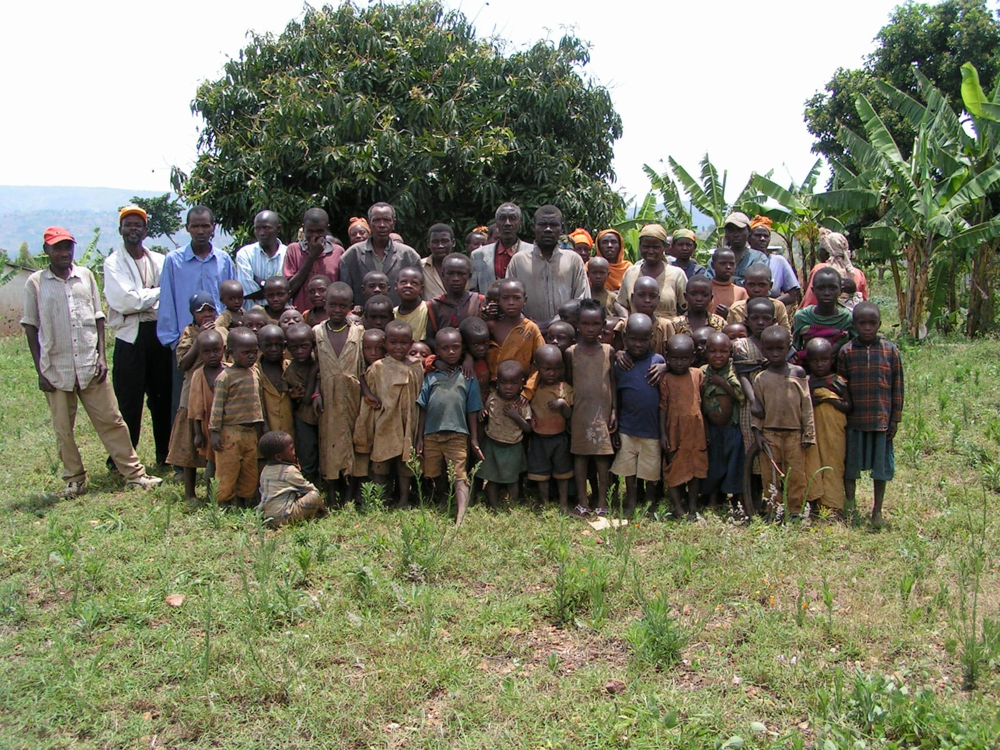
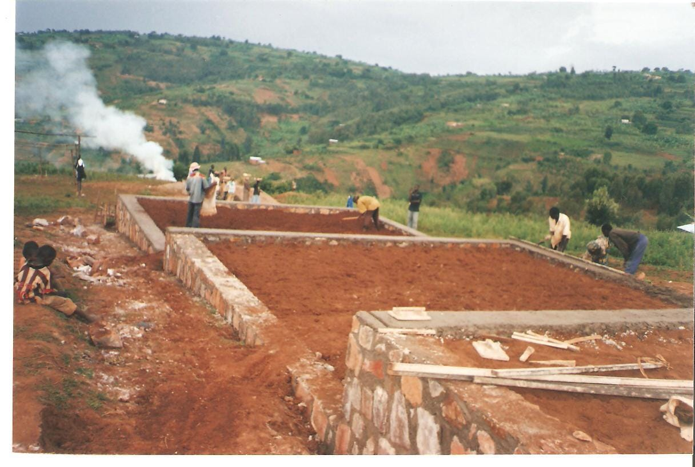
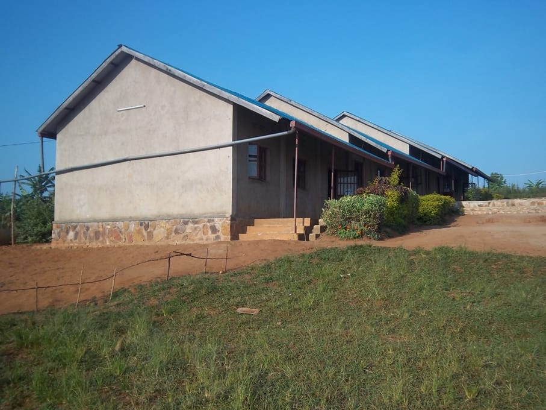
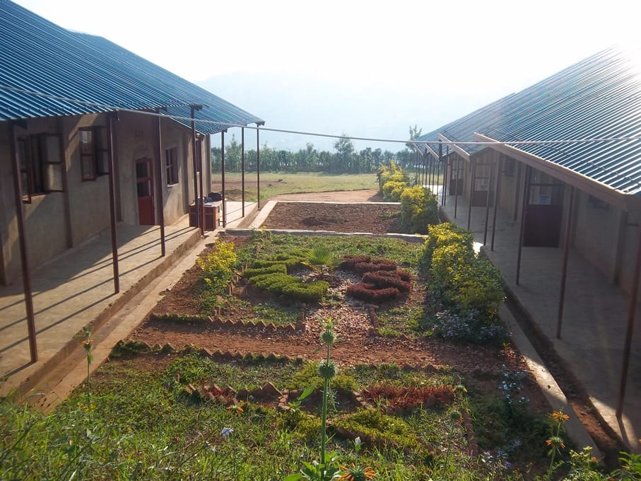
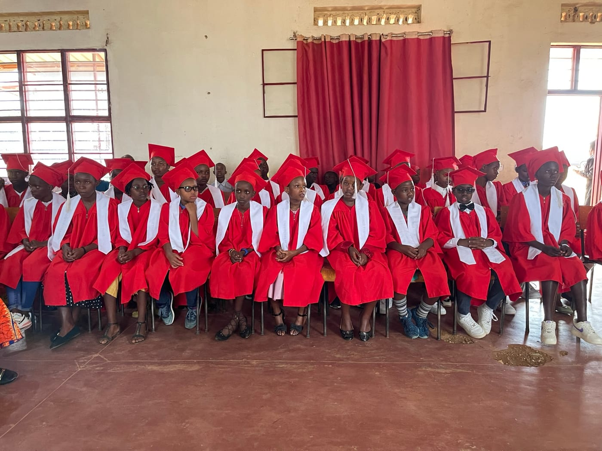
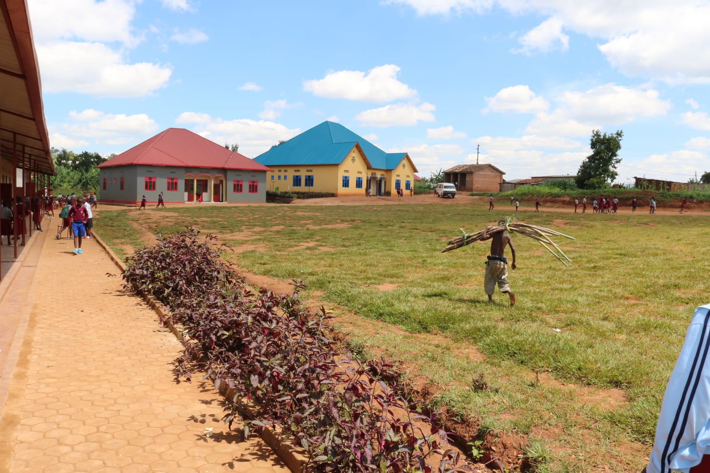
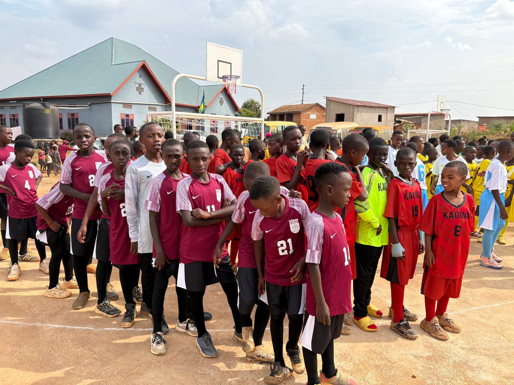

2009 — Before there was a school
It began with a visit. Our founder travelled to Kagina and met the children of the village — most of them out of school, many without shoes. That visit is the reason everything that follows exists.

2010–2011 — Breaking ground
Land was purchased and the village built the school largely by hand — the first classrooms were built by the families whose children would sit in them.

2011 — Four rooms and 181 children
Crimson Academy opened its doors with four classrooms and 181 students, under our first head teacher, Henry.

2012–2013 — A grade a year
Rather than turn students away, we added a classroom each year so the first intake could finish a full primary education without leaving Kagina.

2013 — First in the province
The first cohort to sit the National Examination placed the school first in the Southern Province — the moment the model stopped being a hope and became a record.

2016 — Room to grow
With Crimson Foundation and the Jenzabar Foundation, the campus expanded in a single push: six new classrooms, a library, and a teacher's house.

2019 — More than lessons
School buses and a food programme removed reasons a child might stop attending. Karate, debate, gymnastics, football and chorus began.

2026 — A campus, finished
Two basketball and football courts, a full renovation of every classroom, paved walkways, and planted grounds — the marks of a school here to stay.